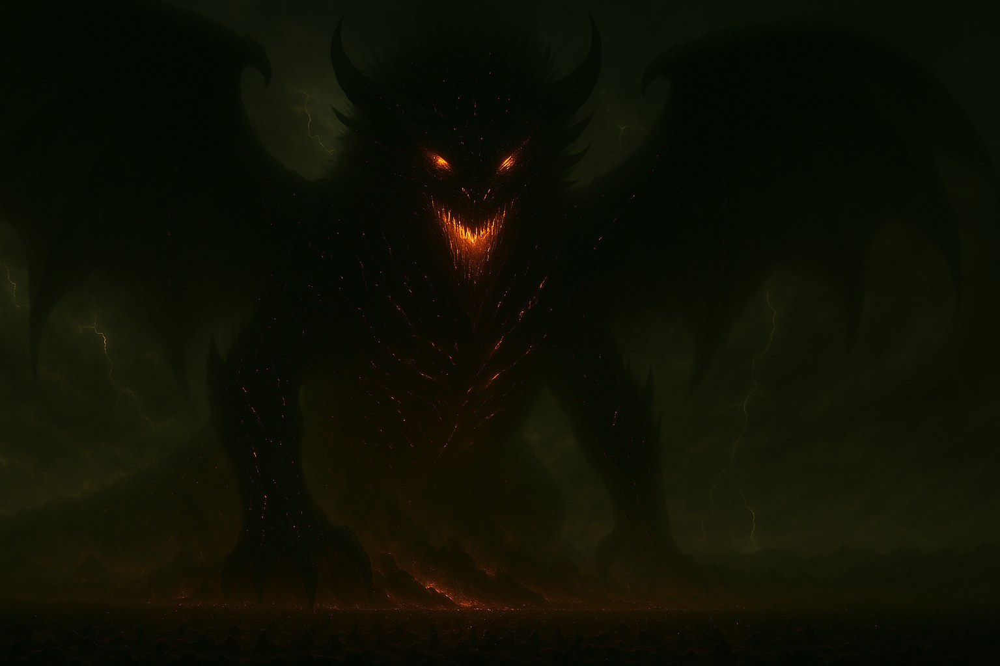
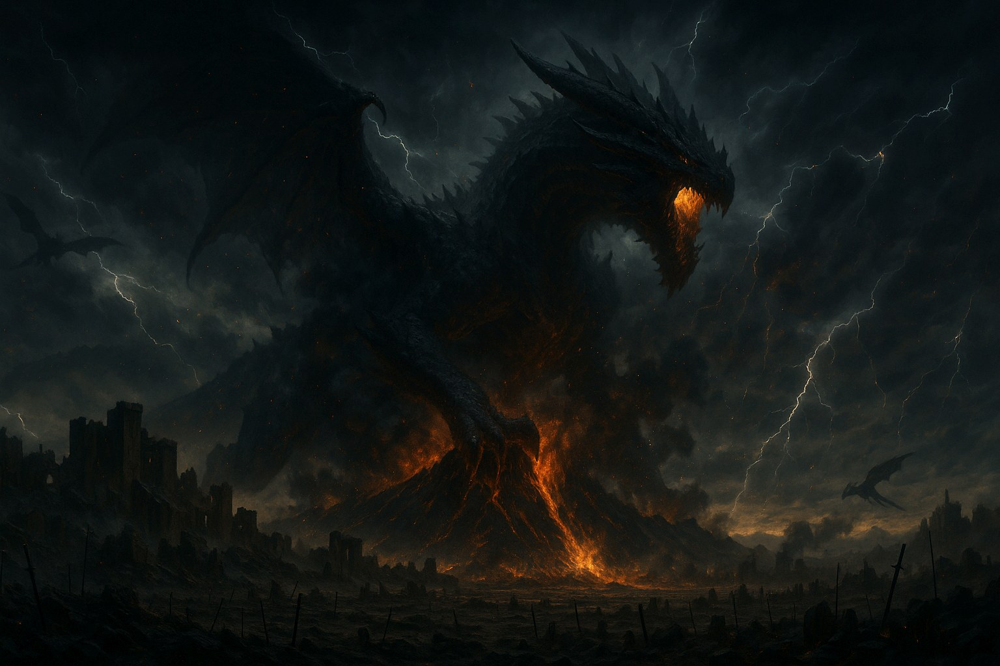

Vhar'Zhul
Trecho do Códice de Cinzas, preservado nas ruínas da Fortaleza Alta de Kheltan.
"Ele não surgiu.
Ele acordou."

Durante a última Era da Cinza, quando os três Reinos de Belford — Kheltan, Irus e Lotun — se uniram pela primeira vez em séculos, o que os uniu não foi honra… mas medo.
Vhar'Zhul é conhecido como o "Despertar do Fim" não apenas por seu poder, mas porque sua chegada reescreveu o próprio silêncio dos céus. As lendas antigas dizem que ele não nasceu — foi selado.
A Origem
Há eras incontáveis, muito antes do surgimento dos reinos, o mundo era dominado por forças que não tinham forma, apenas vontade. Vhar'Zhul foi moldado dessas forças, uma entidade criada não para viver, mas para destruir. Com o tempo, os próprios dragões ancestrais, temendo sua fúria descontrolada, o selaram no céu mais alto, entre nuvens eternas onde nenhum voo ousava tocar.
O selo se quebrou quando a desordem entre os reinos despertou o caos do passado.
A Queda do Monte Othram

Ele caiu dos céus como uma estrela maldita, arrasando a maior montanha de Belford, o Monte Othram, com um simples impacto de suas garras. O que por milênios fora símbolo de estabilidade virou cinza e pedra partida em segundos.
A terra tremeu por dias. O céu permaneceu escarlate por uma semana. O mundo soube:
Vhar'Zhul havia despertado.
Vhar'Zhul, o Silêncio Incandescente.
Vhar'Zhul, o Despertar do Fim.
Sua presença não foi anunciada por rugidos — mas pelo silêncio súbito das tempestades. As nuvens congelaram no céu. Os dragões menores se lançaram ao chão em desespero, tentando enterrar a cabeça sob a própria terra. E então, entre a névoa e os relâmpagos, olhos vermelhos do tamanho de fortalezas brilharam por cima das nuvens como sóis amaldiçoados.
Diz-se que ele não tem idade, pois não vive — ele permanece. Criado nos primórdios, antes mesmo do sopro da magia tocar o mundo.
O Confronto
O exército de Belford avançou com bravura, com lanças forjadas das escamas de dragões antigos, com escudos que resistiam ao fogo. Nada funcionou.
Ao tocar sua pele, as armas se desmanchavam como poeira. Ao ouvir seu sussurro, os soldados esqueceram quem eram.
E no meio do caos, Thorfinn, o Cavaleiro Negro, levantou-se. Mesmo após perder o braço, mesmo ao ver seus companheiros esmagados como folhas, ele se recusou a cair.
Sua raiva alimentou suas armas, sua armadura fundiu-se ao seu espírito, e com um salto impossível ele alcançou a cabeça da criatura e a rasgou com uma lâmina moldada por fúria e aço. O céu tremeu, a terra se abriu. E o guerreiro perdeu o controle.
A carne dele se contorceu, os olhos queimaram, as mãos viraram garras. Tomado por uma fúria ancestral, Thorfinn rompeu o peito da criatura e devorou seu coração incandescente, num estado de êxtase dracônico.
Foi o fim da batalha.
Foi o início de algo novo.
"E quando o silêncio cair novamente sobre o vulcão, e os ventos se calarem, Vhar'Zhul não ressurgirá… ele despertará mais uma vez."